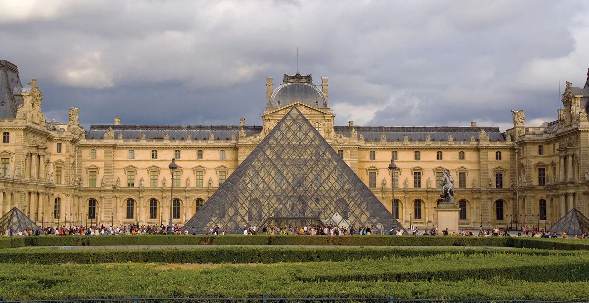

Top 3 Famous Places in Paris - and its Facts
Eiffel Tower

Everyone knows what the Eiffel Tower is but most people
don't know much about it. The Eiffel Tower was built on
March 31, 1889. The construction took 2 years, 2 months,
and 5 days to finish. The Eiffel Tower was built on the park
of Champ de Mars. The Eiffel Tower was built to be an
attraction at the Paris World's Fair in 1889.
Louvre Museum

The Louvre Museum is one of the famous buildings to visit.
The Museum has many different famous artworks which includes:
Venus de Milo, Liberty Leading the People, and none other
than the Mona Lisa. The Louvre Museum was built on August
10, 1793. The Louvre Museum has many contingency plans from
natural disasters to people trying to destroy the artworks.
Arc de Triomphe

The Arc de Triomphe was constructed on July 29, 1836. The
Arc was made to honour the people that fought and died for
France in the French Revolutionary War. Inside of the Arc
de Triomphe is a museum in which people have to pay to visit.
Inside of the museum lies the tomb of the unknown soldier.
The Arc was commissioned by Napoleon I in 1806.
Top 3 Foods to Try in Paris

Onion Soup
Onion Soup was first made during the 18th century.
Onions were cheap and easy to come by so it
became popular in France.
Ingredients: Onions, Olive oil, butter, sugar, salt, garlic, bay leaves, dried thyme leaves,
black pepper, french bread, Gruyere cheese, Parmesan cheese

Quiche Lorraine
Quiche Lorraine first originated in the German
Kingdom of Lothringen and it became a Famous
with France because the location of Lothringen
was between Germany and France.
Ingredients: Bacon strips, Onion, Swiss or Gruyere Cheese, Parmesan Cheese, Eggs, Milk, Cream,
Nutmeg, salt, ground pepper, Tabasco sauce
Baguette au Fromage
Baguette was first created in the 1920s
in Paris. By French law the baguette must be made
only with Flour, salt, water, and yeast.
Ingredients: Flour, Salt, Honey, Yeast starter, Water, Gruyere Cheese, Cream cheese,
Grated cheese (Parmesan)
Sources
Eiffel Tower
Louvre Museum
Arc de Triomphe
Onion Soup Recipe
Quiche Lorraine Recipe
Baguette History
Baguette au Fromage Recipe